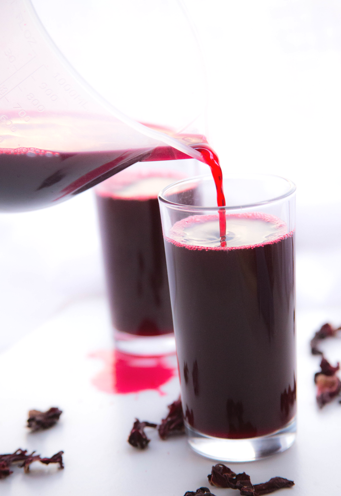

Ingredients
- 1 ginger
- 1/2 kg zobo leaves (hibiscus sabdariffa)
- 1 tsp. brown sugar
- 2 cups water
- 1 pineapple
Description
This super drink Zobo, is very tasty, colourful and highly medicinal. This plant is believed to have originated from the West Africa before spreading to other parts of the the world and different people uses the roselle (hibiscus sabdariffa) for different purposes.
Recipe credit:
Steps
- Wash and peel the pineapple, cut into tiny bits and add them to a clean pot.
- Peel the ginger, cut it into tiny pieces, and add it to the same pot with the pineapple.
- Wash the zobo leaves thoroughly with clean water and add them to the pot as well.
- Add water to the pot, then place it on medium heat and cook until the pineapples are tender and the zobo leaves are softened.
- Bring the pot down from heat and allow the mixture to cool down.
- Add sugar to the drink, stir well, then refrigerate for a few minutes before serving.
Notes
Servings : 4
Ready in : 30 Minutes
Course : DESSERT
Recipe Type : Lunch
Percent Daily Values are based on a 2000 calorie diet.
Nutrition
103 calories, 0.5g fat (5% DV), 1g saturated fat (100% DV), 0g trans fat, 0g polyunsaturated fat, 0g monounsaturated fat, 0mg cholesterol (0% DV), 33mg sodium (1.65% DV), 20.9g carbohydrates (8% DV), 2g dietary fiber, 2g sugars, 5g protein, 62% Vitamin A, 82% Vitamin C, 27% Calcium, 17% Iron (% Daily Values based on a 2000 calorie diet).